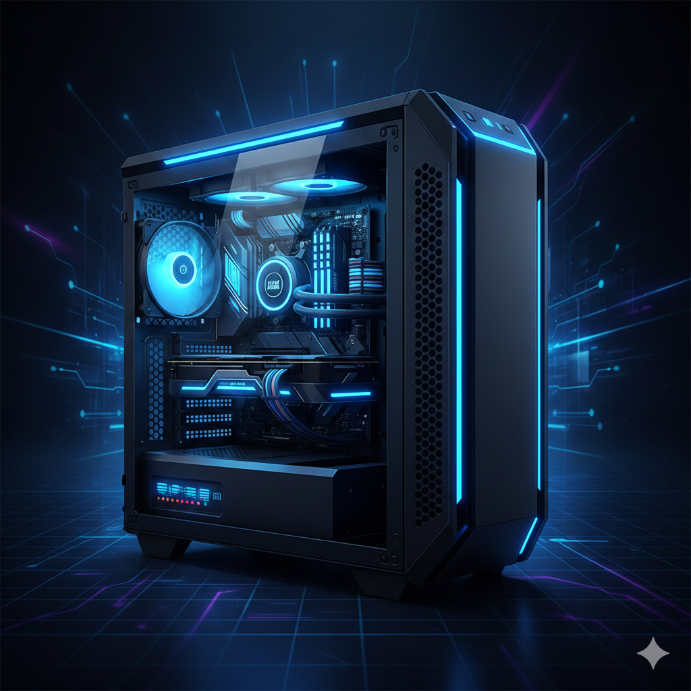

O que é hardware?
Hardware refere-se aos componentes físicos de um computador, como o processador, memória, placa-mãe, discos rígidos e periféricos como teclado e mouse.

Gabinete
O gabinete é a estrutura que abriga todos os componentes de hardware do computador, protegendo-os e permitindo a circulação de ar para resfriamento.

Processador
O processador é o cérebro do computador, responsável por executar as instruções e processar os dados.

Memória-RAM
A memória RAM é onde o computador armazena temporariamente os dados que estão sendo usados ativamente.

Placa-mãe
A placa-mãe é a principal placa de circuito do computador, conectando todos os componentes de hardware entre si.

HD e SSD
O HD e SSD são dispositivos de armazenamento onde os dados são armazenados permanentemente, mesmo quando o computador está desligado.

Periféricos
Periféricos são dispositivos externos, como teclado, mouse, headphone, que permitem a interação com o computador.

Placa de Vídeo
A placa de vídeo é responsável por processar e renderizar as imagens exibidas no monitor, especialmente em jogos e aplicações gráficas.

Fonte de Alimentação
A fonte de alimentação converte a energia elétrica da tomada em energia utilizável para os componentes do computador.

Cooler
O cooler é um dispositivo de resfriamento que ajuda a manter a temperatura dos componentes do computador dentro de limites seguros.

Monitor
O monitor é o dispositivo de saída que exibe as imagens e textos processados pelo computador.